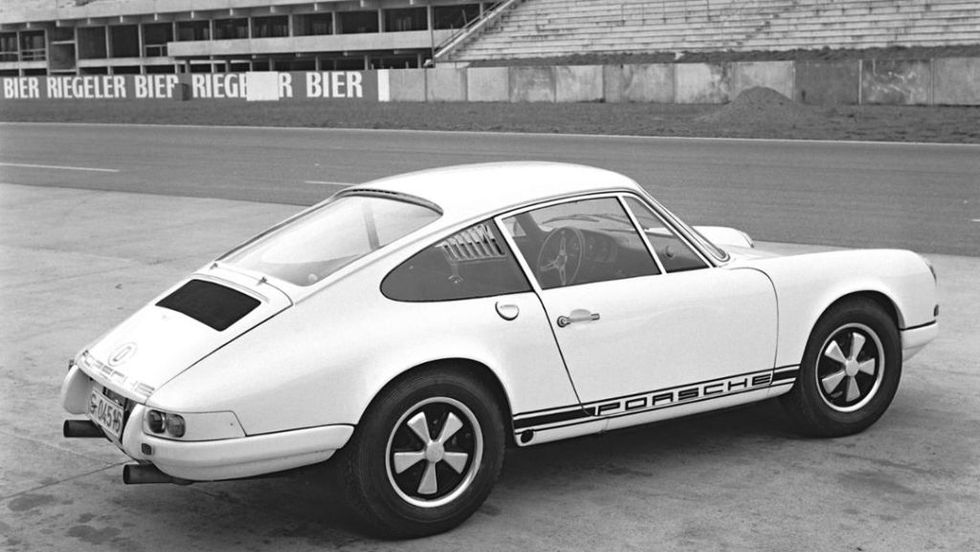

Porsce 911
The Porsche 911 represents vintage driving at its best—particularly during the golden era before the car's 1974 redesign. "There's magic in the early 911," Hagerty says. "It's an amazingly well-built machine that delivers one of the most honest driving experiences of any sports car ever built." Even by today's standards, first-generation 911s still have plenty of horsepower and can hold their own on the track. You can find one, even in mint condition, on eBay.